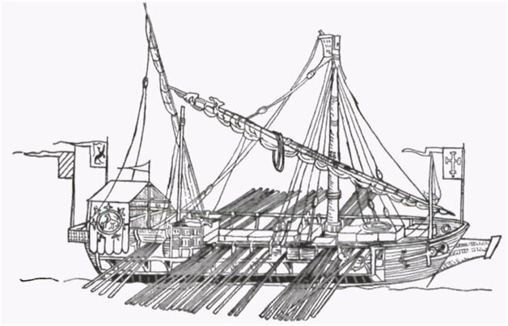
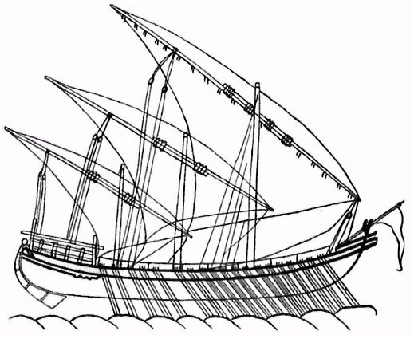

Мы уже говорили в прошлых заметках о галеасе, что этот корабль появился не на ровном месте, а стал развитием большой купеческой галеры. Чтобы сохранить подобающее почтение к предкам, скажем о них несколько слов. Источники будем, как обычно, указывать по ходу изложения. Основной же источник назовем сейчас: Frederic C. Lane. «Navires et Constructeurs à Venise pendant la Renaissance» (Paris, 1965).
В стандартной венецианской галере все характеристики были доведены до совершенства. «Длинные корабли» меньших размеров (fuste, galeotte, bregantini, и fregate) были упрощением стандартной галеры и использовались в основном как посыльные суда и в целях патрулирования побережья. Однако большие галеры не были просто следствием изменения масштабного фактора, они являлись фактически новым классом гребных судов, конструкция которых являлась комбинацией характеристик «круглых кораблей» с характеристиками галер.
Большие галеры являлись чисто венецианским изобретением и предназначались первоначально для коммерческих целей. Называют даже точную дату этого изобретения: то ли 1294, то ли 1298 год. Однако сказать, что после этой даты все перевозки товаров венецианских купцов совершались на больших галерах нельзя. Долгое время еще срочные перевозки и перевозки дорогостоящих грузов осуществлялись стандартными галерами, в частности, на них перевозили золото из Туниса. В этих случаях высокая стоимость перевозки на обычных галерах, где были большие экипажи, но малая грузовместимость, могла быть приемлема.
Но почему альтернативой галерным перевозкам у венецианцев не стали чисто парусные «круглые суда»? Трудно дать строго определенный ответ на этот вопрос, но, по-моему, здесь сыграла свою роль историческая память. Тяжелые потери торгового флота венецианцев, в том числе и в первую очередь среди парусных купеческих судов, в череде войн с Генуей в конце XIII века заставили Венецию прибегнуть к совершенно новой системе организации торгового мореплавания. В основу была положена доставка товаров, главным образом таких дорогостоящих, как специи и шелк, только на борту вооруженных кораблей, а это значит – галер, на которых было большое число опытных воинов – солдат и гребцов. Кроме того, гребной флот стал в Венеции фактически государственным флотом. Назначение командного состава галер, подбор гребцов, снабжение их всеми видами довольствия, определение времени отплытия и возвращения галер, их маршруты следования, тарифы за перевозку грузов – все определялось государством. В таких условиях любые частные купцы, к которым относились и владельцы парусных судов, не могли выдержать конкуренции. Галерный купеческий флот стал господствующим в Венеции.

В некоторых описаниях говорится, что большие купеческие галеры того времени напоминают в средней своей части обычную галеру, а оконечностями – «круглые» корабли. Но такое сравнение слишком преувеличивает схожесть их с большими парусниками того времени. Хотя эти галеры имели более высокий и тупой нос и более широкую кормовую часть, однако на них отсутствовали носовые и кормовые надстройки, свойственные тогдашним парусникам и имели они только одну палубу. По всем признакам это были скорее галеры, чем «круглые» суда, хотя и способные нести более развитое парусное вооружение. Да и по соотношению длины и ширины (6:1) они относились конечно же к «длинным» судам (стандартная венецианская галера того времени имела такое соотношение 8:1).
Первоначально, сразу после своего появления в начале 14 века, большие галеры вообще мало отличались от стандартных. Их размерения строго определялись кораблестроительными регламентами и различались для галер, предназначенных для плавания в различных направлениях. Самыми большими были галеры типа «Фландрия», предназначенные для перевозки грузов в Нидерланды, затем следовали галеры типа «Трабзон» - для портов Черноморского бассейна, и, наконец, типа «Александрия», имеющие целью порты Леванта и Египта. Существовали также галеры типа «Романия» для плавания в зоне Апеннинского полуострова. Галеры типа «Фландрия» были способны нести под палубой груз до 140 тонн.
Столетие спустя, в XV веке, грузоподъемность галер фламандского направления, наиболее распространенных купеческих галер, была доведена до 200 тонн груза, размещаемого под палубой. В это же время были созданы специальные галеры для плавания в Константинополь, более узкие и с меньшим возвышением борта над водой по сравнению с «Фландрией», способные нести в трюме до 150 тонн груза. Наибольший расцвет больших купеческих галер в Венеции был достигнут в середине XV века, когда декретом Сената от 1440 года все их существующие «типоразмеры» были сведены практически к одному, способному перевозить под палубой от 500 до 600 миллиариев (1 милл. = 0,47 т), т.е. около 250 тонн груза.
Необходимость перевозить большой груз вызвала ряд конструктивных изменений большой галеры, которые ухудшили ее характеристики. При полной загрузке значительно повышалась осадка, что затрудняло греблю. Кроме того, рама постицы (апостиса) была ближе к бортам галеры, т.е. действующий рычаг весла уменьшался, соответственно снижалась скорость при той же затрате мускульной силы гребцов. Отсюда проистекало значительное сокращение числ
Подробные описания таких галер, приспособленных для перевозки паломников в Святую Землю, имеются в путевых заметках таких деятелей церкви, как Феликс Фабри и Пьетро Касола. Мы частично уже касались их описаний (см. например, здесь), однако материал, содержащийся в этих заметках, очень богатый и подлежит, конечно же, подробному рассмотрению в дальнейшем. Выше приведено изображение одной из таких галер, взятое из Peregrinatio in Terram Sanctam и относящееся примерно к 1485 году. Это изображение в основном подтверждает описания, данные в работах Фабри и Касола.
Чем крупнее становились купеческие галеры и чем сильнее их зависимость от парусов, тем больше был контраст между парусным вооружением стандартной галеры и парусами ее купеческой сестры. К началу XV века большие галеры имели все еще две мачты, из которых фок-мачта была много выше и несла самый большой парус. Первая трехмачтовая галера скорее всего была подобна изображению, обнаруженному Андерсоном в манускрипте Тимботты 1445 года:

Была добавлена третья мачта в корме, самая маленькая из всех. К середине XV века парусное вооружение купеческой галеры напоминало уже паруса каравеллы. Практически одновременно с парусными кораблями на больших галерах перешли к новой конструкции, когда самой большой становится грот-мачта, на ней находится и самый большой парус, который используется для хода галеры, в то время как паруса на фок-мачте и бизани применяли лишь при маневрировании галеры.
Хотя в XV веке большие купеческие галеры и составляли основу торгового флота Венеции, однако уже за первые 35 лет XVI века они практически исчезли. Между 1535 и 1569 гг. из Венеции отплыли только две таких галеры в Бейрут и две в Александрию. Это произошло как вследствие быстрого прогресса в конструкции «круглых» судов, так и вследствие изменения торговых маршрутов вместе с изменением политической обстановки к началу XVI века. Большие экипажи галер делали перевозки на них чрезмерно дорогими. Конкуренция со стороны парусных судов, а также быстрое развитие артиллерии лишало галеры их былых преимуществ. Известный рейд Дрейка в Кадис и Корунну в 1587 году показал всю беззащитность галер от пушечного огня парусных кораблей. Впрочем, еще до Дрейка сами венецианцы могли убедиться в преимуществе парусников, вооруженных артиллерией: в 1499 году в сражении при Зонкьо во время Венециано-Османской войны (которое считается первым сражением с использованием установленных на кораблях пушек), и в 1538 г. в битве при Превезе, когда крупные парусники венецианцев подвергались атакам всего османского галерного флота и в обоих случаях достойно себя проявили. Они не показали необходимых наступательных качеств, но в обороне оказались весьма устойчивыми. Но ведь для купеческих кораблей как раз и нужны не наступательные, а оборонительные качества.
Продолжим тему в следующий раз.